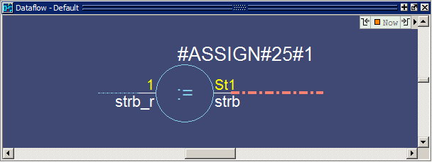
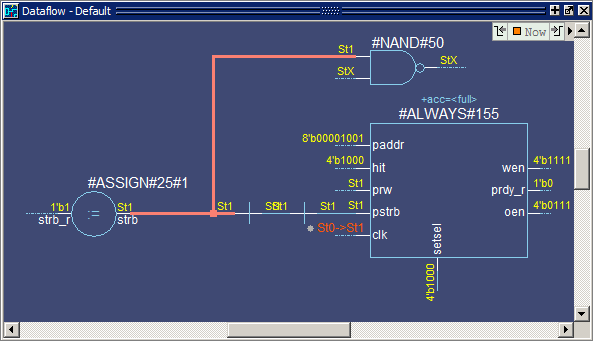
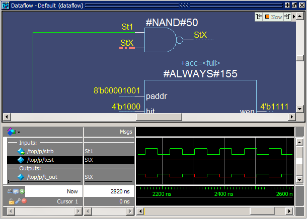
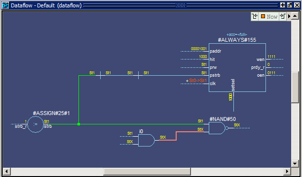
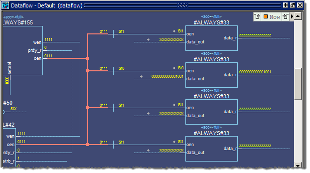

Exploring Connectivity
Procedure
- Add
a signal to the Dataflow window.
- Make sure instance p is selected in the Structure (sim) window.
- Drag
signal strb from the Objects window to the Dataflow window (Figure 1).Figure 1. A Signal in the Dataflow Window
- Explore
the design.
- Click
the Expand
net to all readers icon.
The view expands to display the processes that are connected to strb (Figure 2).
Figure 2. Expanding the View to Display Connected Processes - Find
the drivers of the signal test on process #NAND#50 (labeled line_71
in the VHDL version).
Click the Show Wave icon
 to open the Wave
Viewer. You may need to increase the size of the Dataflow window
to see everything
to open the Wave
Viewer. You may need to increase the size of the Dataflow window
to see everythingSelect the #NAND#50 gate (labeled t_out_asgn in the VHDL version) in the Dataflow Viewer. This loads the wave signals for the inputs and outputs for this gate into the Wave Viewer and highlights the gate.
Select the test signal in the Wave Viewer. This highlights the test input in the Dataflow Viewer. (Figure 3)
Figure 3. Select test signalSelect the highlighted signal in the Dataflow Viewer (this makes the Dataflow Viewer portion of the Dataflow window active) then click the Expand net to all drivers icon.

In Figure 4, the green highlighting indicates the path you have traversed in the design.
Figure 4. The test Net Expanded to Show All DriversSelect the net for the oen signal on process #ALWAYS#155(labeled line_84 in the VHDL version), and click the Expand net to all readers icon.
Figure 5. The oen Net Expanded to Show All ReadersContinue exploring if you wish.
When you are finished, click and hold the Delete Content button until a drop-down list appears; then select Delete All to clear the Dataflow Viewer.

- Click
the Expand
net to all readers icon.